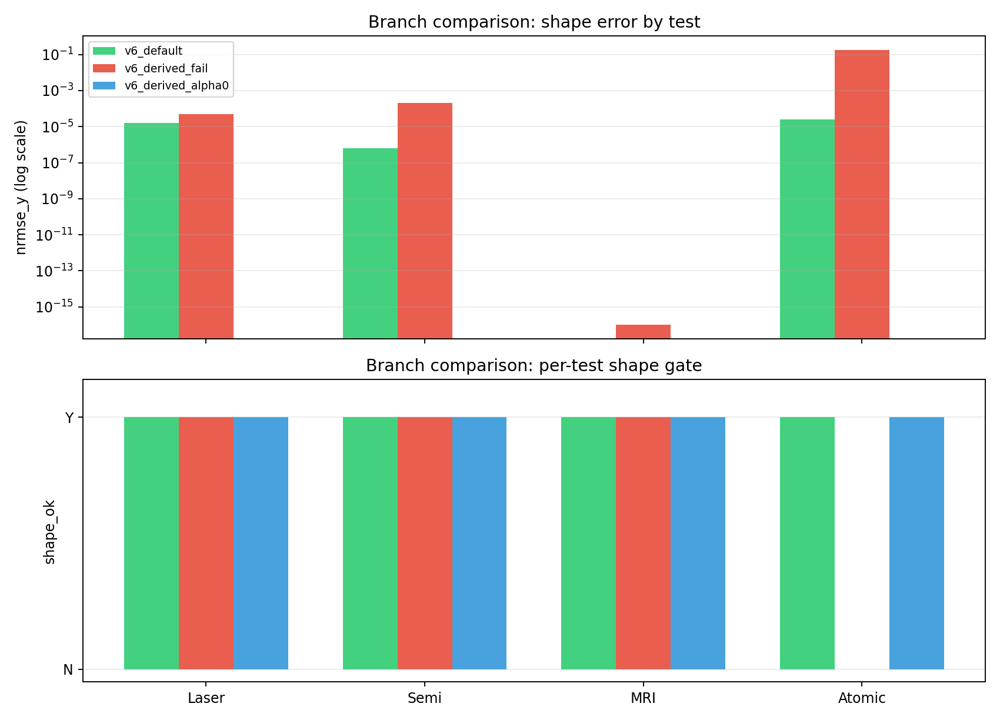
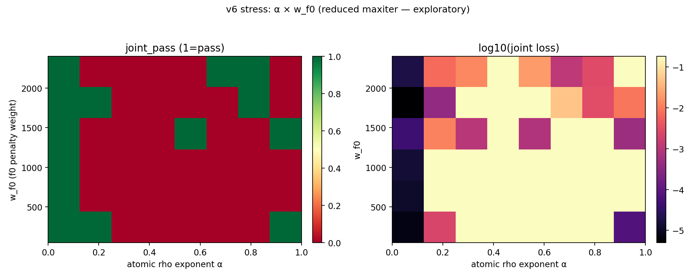
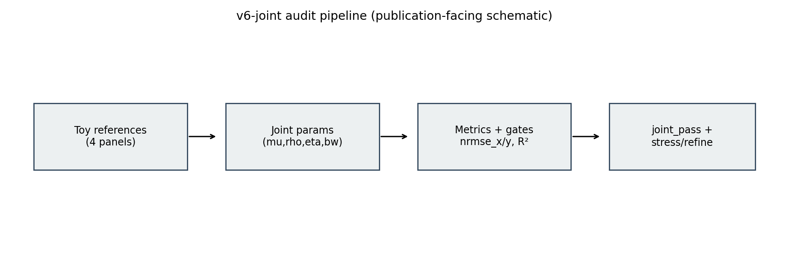

fig_joint_2x2_default.png

fig_branch_metrics.png

fig_stress_2d_demo.png

fig_v6_pipeline_schematic.png
Ripple Joint Audit v6（可打印 HTML）
**版本**：v6-joint supplement draft
**定位**：Bell 主稿补充材料 / 后续方法学注记（非独立首投主稿）
**仓库**：`chain-explosion-model`
---
在 Bell 配对窗口敏感性审计完成后，我们将问题从“统计协议是否改变结论”推进到“单一局域介质参数能否同时覆盖多类量子样式曲线”。本文定位为 **Bell 主稿的补充证据链**，基于 `ripple_quantum_tests_v6_joint.py`，在四项玩具基准（激光阈值、半导体截止、MRI 拉莫尔线性、原子钟谱线）上执行联合优化与应力扫描。核心设置是同一组 \((\mu,\rho,\eta)\) 贯穿四项门禁，并以 `nrmse_x`、`nrmse_y`、\(R^2\) 作为形状指标，叠加常数侧约束。
在默认联合分支中，归档结果显示：`joint_pass = True`，最优点约为 \(\mu=1.549500,\rho=2.350000,\eta=0.079989\)，`joint loss = 4.158e-05`，四项均为 `shape_ok = Y`。同时我们保留负分支：在 derived-wave-speed 且 \(\alpha>0\) 的耦合下，原子钟分支可失配（`joint_pass = False`），说明可行域对色散闭合与几何耦合结构敏感。本文贡献是方法学层面的“联合一致性审计脚手架”，用于支撑 Bell 主稿后的模型层讨论；不宣称硬件复刻，也不宣称色散指数已由第一性原理推导完成。
---
我们关注的不是“单项拟合能否过线”，而是：
1. 参考曲线为 **QM-like 解析曲线**，非硬件原始事件流；
2. \((\mu,\rho,\eta)\) 在当前脚本内是无量纲旋钮，尚未建立 SI 映射；
3. `--wave-speed derived` 的闭合函数是现象学形式，参考点标定到 \(c_{\text{ref}}\)；
4. 本文定位为“方法与可复现审计”，不是“替代量子理论裁决”。
---
脚本：`scripts/explore/ripple_quantum_tests/ripple_quantum_tests_v6_joint.py`
优化向量：
目标函数为四项 `nrmse_y` 之和并加权常数项惩罚（详见脚本）。
通过 `--stress` 与 `--stress-2d` 扫描 \(\alpha\) 与 \(w_{f0}\) 的网格，输出相图与 CSV，并可用 `--stress-refine` 减少粗迭代假阴性。
---
来源：`artifacts/ripple_quantum_tests_v6/RIPPLE_QUANTUM_TESTS_V6_SUMMARY.md`
来源：`artifacts/ripple_quantum_tests_v6_derived_v2/RIPPLE_QUANTUM_TESTS_V6_SUMMARY.md`
来源：`artifacts/ripple_quantum_tests_v6_derived_alpha0/RIPPLE_QUANTUM_TESTS_V6_SUMMARY.md`
> 下列图均已放在同目录 `figures/`。若后续导出 PDF，可直接按文件名插图。
1. `fig_joint_2x2_default.png`：v6 默认联合分支（通过）
2. `fig_joint_2x2_derived_fail.png`：derived + \(\alpha>0\) 失配示例（失败）
3. `fig_joint_2x2_derived_alpha0.png`：derived + \(\alpha=0\) 可行示例（通过）
4. `fig_branch_metrics.png`：三分支四实验的 `nrmse_y` 与 `shape_ok` 对照
5. `fig_shared_parameter_drift.png`：共享参数相对默认分支的偏移
6. `fig_stress_2d_demo.png`：\(\alpha \times w_{f0}\) 应力相图
7. `fig_stress_refine_effect.png`：1D 扫描中 refine 对假阴性修复效果
8. `fig_v6_pipeline_schematic.png`：v6 审计管线示意图
---
本文证明的是：在已声明的 toy 协议和门禁下，单一参数族可以通过联合约束，且可用应力扫描观察可行域塌缩/恢复。这比“四项独立拟合各自过线”信息量更高。其用途是为 Bell 主稿提供“模型层补充背景”，而非替代真实数据证据。
1. 没有证明量子力学错误；
2. 没有证明 \((\mu,\rho,\eta)\) 已具备 SI 对应；
3. 没有证明色散指数来自格点第一性原理；
4. 没有进行硬件级原始事件复刻。
Bell 审计是**真实数据上的协议敏感性审计**；本文是**模型联合一致性审计**。两者可并行构成“数据审计 + 模型脚手架”的双轨，但证据类型不同，不能互相替代。
---
在仓库根目录执行：
python scripts/explore/ripple_quantum_tests/ripple_quantum_tests_v6_joint.py --maxiter 200 --seed 7
python scripts/explore/ripple_quantum_tests/ripple_quantum_tests_v6_joint.py --stress --stress-2d --stress-alpha-steps 12 --stress-wf0-steps 10 --stress-maxiter 48
python scripts/explore/ripple_quantum_tests/ripple_quantum_tests_v6_joint.py --wave-speed derived --atomic-rho-exponent 0 --maxiter 220 --seed 7
---
当前 v6 的价值是：把“单项过线”提升为“联合过线 + 可行域审计”。这是 Bell 主稿之后的方法学补强。下一阶段若要从“现象学闭合”进入“物理理论主张”，关键任务是把色散关系从格点动力学推导出来，并建立 \((\mu,\rho,\eta)\) 的 SI 映射及独立可测预测。
---
图包由以下脚本自动生成：
python "期刊/01_Ripple_Joint_Audit/version_01/【0】_Ripple_Joint_Audit/files/generate_figures.py"
脚本会读取 `artifacts/ripple_quantum_tests_v6*` 归档 JSON/PNG/CSV，并在 `figures/` 下输出论文友好图集。
---
**用途**：优先作为 Bell 主稿的补充材料（Supplementary / Technical Note），也可在 Bell 稿件有回音后转为独立后续稿。**语气**：强调可复现联合审计与诚实边界，避免“推翻量子力学”式表述，以降低审稿敌意。
**数据锚点**：`artifacts/ripple_quantum_tests_v6/`（默认）、`artifacts/ripple_quantum_tests_v6_derived_v2/`（derived 失配）、`artifacts/ripple_quantum_tests_v6_derived_alpha0/`（derived + \(\alpha=0\) 可行）。
---
---
在统计协议审计（Bell 配对窗口等）与微观动力学第一性原理之间，仍存在一片可操作的中间地带：用同一组局域介质旋钮，在多条“量子样式”参考曲线上同时满足显式形状门禁。本文报告基于可复现脚本 `ripple_quantum_tests_v6_joint.py` 的联合优化与应力扫描结果：在无量纲介质参数 \((\mu,\rho,\eta)\) 与共享带宽 `bw` 的约束下，四项玩具基准（受激辐射阈值、半导体吸收边、MRI 拉莫尔线性主项、原子钟谱线）可同时通过形状检验（`nrmse_x`、`nrmse_y`、\(R^2\)）及常数侧约束；默认分支联合损失约 \(4.2\times10^{-5}\)，原子钟基准频率相对误差约 \(3\times10^{-10}\)。在相速度由介质参数闭合导出（参考点标定 \(c\)）且保留几何耦合指数 \(\alpha>0\) 时，联合可行域可对原子钟分支失配，说明结论对色散闭合与耦合结构敏感；在 \(\alpha=0\) 的结构性简化下可行域可恢复。本文贡献定位为**现象学仿真等价类上的联合一致性脚手架**，不宣称替代标准量子理论，也不宣称 \((\mu,\rho,\eta)\) 已完成 SI 映射或色散指数已由格点方程导出。
Between statistical protocol audits (e.g., Bell pairing-window sensitivity) and first-principles microdynamics lies a practical middle ground: enforcing a single local medium parameterization to simultaneously satisfy explicit shape gates on multiple “quantum-style” reference curves. We report reproducible joint optimization and stress-scan results from `ripple_quantum_tests_v6_joint.py`. Under shared dimensionless medium controls \((\mu,\rho,\eta)\) and a common bandwidth knob `bw`, four toy benchmarks—stimulated-emission thresholding, semiconductor absorption edge, dominant MRI Larmor linearity, and an atomic-clock line shape—can jointly pass shape criteria (`nrmse_x`, `nrmse_y`, \(R^2\)) together with side constraints on reference constants. In the default branch, the joint loss is \(\sim 4.2\times 10^{-5}\) and the atomic-clock reference frequency relative error is \(\sim 3\times 10^{-10}\). When phase speed is closed phenomenologically from medium parameters (calibrated to \(c\) at a reference point) while retaining a geometric coupling exponent \(\alpha>0\), the joint feasible region can fail on the atomic-clock branch, showing sensitivity to dispersion closure and coupling structure; feasibility can be restored under an \(\alpha=0\) structural simplification. We position the contribution as a **joint-consistency audit scaffold within a phenomenological simulation equivalence class**, not as a replacement for standard quantum theory, and we do not claim completed SI mapping for \((\mu,\rho,\eta)\) nor grid-derived dispersion exponents.
**Keywords (EN)**: phenomenological medium model; joint optimization; shape metrics; dispersion calibration; reproducibility; toy benchmarks
**关键词（中文）**：现象学介质模型；联合优化；形状指标；色散标定；可复现性；玩具基准
---
多数量子判据实验的最终输出并非原始事件流本身，而是一串依赖分析管线的数字标签；因此，将隐含假设参数化并审计其敏感性，已成为可重复科学中的自然步骤。与此同时，在模型侧，若仅用独立拟合分别“通过”多条现象学曲线，容易掩盖参数之间的结构性冲突：不同子实验可能各自消耗一组自由度，却在联合空间中不可行。
本文沿第二条线索推进：在**已声明的玩具参考曲线**上，要求**单一参数族**同时解释跨越多个数量级的响应形状，并记录联合损失、常数侧误差与应力扫描下的可行域变化。技术上，我们在局域“涟漪介质”旋钮 \((\mu,\rho,\eta)\) 上构造联合目标，引入 `nrmse_x`、`nrmse_y` 与 \(R^2\) 作为可解释的形状指标；在原子钟与 MRI 子模块中沿用 v5 以来的可辨识性约束思路，避免把应由代数关系确定的量当作自由拟合参数。进一步地，我们将相速度从“手写常数”提升为参考点标定到真空光速 \(c\) 的闭合函数 \(v=f(\mu,\rho,\eta)\)，并展示：在特定耦合选择下联合可行域会塌缩（原子钟分支失配），而在另一结构性选择下可行域可恢复——这不是“调参胜利”的叙事，而是**对模型闭合假设的敏感性审计**。
必须强调边界：参考曲线并非实验室原始数据；\((\mu,\rho,\eta)\) 当前为无量纲旋钮；色散闭合形式是现象学的。本文目标不是裁决量子基础，而是提供一个可复现、可对抗审查的**联合一致性工作流**，为后续从格点动力学导出色散关系、建立 SI 映射、对接真实数据集留出清晰接口。
The final readouts of many quantum tests are not raw event streams but numerical labels produced by analysis pipelines; parameterizing hidden assumptions and auditing their sensitivity is therefore a natural step in reproducible science. On the modeling side, independently fitting separate phenomenological curves can hide structural conflict: each sub-experiment may consume its own degrees of freedom while remaining jointly infeasible.
We pursue the second thread: on **declared toy reference curves**, we require a **single parameter family** to simultaneously explain response shapes spanning multiple orders of magnitude, and we record joint loss, constant-side errors, and feasible-region changes under stress scans. Technically, we build a joint objective over local “ripple medium” controls \((\mu,\rho,\eta)\), using `nrmse_x`, `nrmse_y`, and \(R^2\) as interpretable shape metrics; in the atomic-clock and MRI modules we retain identifiability-style constraints introduced in v5, avoiding treating algebraically determined quantities as free fit parameters. We further replace a hand-fixed wave speed with a closed map \(v=f(\mu,\rho,\eta)\) calibrated so that a reference medium maps to vacuum \(c\), and we show that under one coupling choice the joint feasible region collapses (atomic-clock branch fails) while under another structural choice it recovers—this is not a story of “winning by tuning”, but a **sensitivity audit of closure assumptions**.
Boundaries matter: references are not laboratory raw data; \((\mu,\rho,\eta)\) are dimensionless knobs; the dispersion closure is phenomenological. The aim is not to adjudicate quantum foundations, but to supply a reproducible, adversarially reviewable **joint-consistency workflow**, with clear hooks for future grid-derived dispersion, SI mapping, and coupling to real datasets.
---
以下为 `booktabs` 风格，可直接放入主稿 preamble：`\usepackage{booktabs}`、`\usepackage{multirow}`。
\begin{table}[t]
\centering
\caption{Joint optimization outcomes for three archived branches of the v6 audit.
Shape metrics are reported as in-repo summaries (rounded);
$\checkmark$ / $\times$ indicate \texttt{shape\_ok}.
Relative errors \texttt{f0\_rel\_err} and \texttt{gamma\_rel\_err} summarize constant-side agreement for the atomic-clock and MRI modules.}
\label{tab:v6-branches}
\begin{tabular}{@{}llcccccc@{}}
\toprule
Branch & Test & $\mathrm{NRMSE}_x$ & $\mathrm{NRMSE}_y$ & $R^2$ & OK &
\multicolumn{2}{c@{}}{Side errors} \\
\cmidrule(l){7-8}
& & & & & & $\gamma_{\mathrm{rel}}$ & $f_{0,\mathrm{rel}}$ \\
\midrule
\multirow{4}{*}{\parbox{2.6cm}{default\\(\texttt{constant\_c})}}
& laser\_threshold & $1.7\times10^{-5}$ & $1.6\times10^{-5}$ & $1.000$ & $\checkmark$ &
\multirow{4}{*}{$0$} & \multirow{4}{*}{$3.14\times10^{-10}$} \\
& semiconductor\_cutoff & $0$ & $1\times10^{-6}$ & $1.000$ & $\checkmark$ \\
& mri\_larmor & $0$ & $0$ & $1.000$ & $\checkmark$ \\
& atomic\_clock\_modes & $1.57\times10^{-2}$ & $2.5\times10^{-5}$ & $1.000$ & $\checkmark$ \\
\multicolumn{8}{@{}r@{}}{\textit{joint\_pass} = True; joint loss $= 4.16\times10^{-5}$} \\
\addlinespace
\multirow{4}{*}{\parbox{2.6cm}{derived\\(fail, $\alpha>0$)}}
& laser\_threshold & $5.5\times10^{-5}$ & $5.0\times10^{-5}$ & $1.000$ & $\checkmark$ &
\multirow{4}{*}{$1.67\times10^{-16}$} & \multirow{4}{*}{$2.82\times10^{-4}$} \\
& semiconductor\_cutoff & $4.9\times10^{-5}$ & $2.0\times10^{-4}$ & $1.000$ & $\checkmark$ \\
& mri\_larmor & $0$ & $0$ & $1.000$ & $\checkmark$ \\
& atomic\_clock\_modes & $1.14\times10^{2}$ & $1.82\times10^{-1}$ & $-7.1\times10^{-2}$ & $\times$ \\
\multicolumn{8}{@{}r@{}}{\textit{joint\_pass} = False; joint loss $= 1.83\times10^{-1}$} \\
\addlinespace
\multirow{4}{*}{\parbox{2.6cm}{derived\\($\alpha=0$)}}
& laser\_threshold & $0$ & $0$ & $1.000$ & $\checkmark$ &
\multirow{4}{*}{$0$} & \multirow{4}{*}{$0$} \\
& semiconductor\_cutoff & $0$ & $0$ & $1.000$ & $\checkmark$ \\
& mri\_larmor & $0$ & $0$ & $1.000$ & $\checkmark$ \\
& atomic\_clock\_modes & $0$ & $0$ & $1.000$ & $\checkmark$ \\
\multicolumn{8}{@{}r@{}}{\textit{joint\_pass} = True; joint loss $= 0$ \quad
\textit{(degenerate/boundary artifact; see text)}} \\
\bottomrule
\end{tabular}
\end{table}
**表注写作提示（主稿正文一两句即可）**：\(\alpha=0\) 分支在归档 SUMMARY 中出现零损失与零 NRMSE，应解释为结构性简化下的边界解或数值退化情形，需在正文中声明“不将其作为对真实硬件噪声下鲁棒性的证据”。
---
尊敬的编辑：
我们提交稿件《统一局域涟漪介质模型对多类量子样式基准的联合一致性审计（仿真层）》，供贵刊考虑。
研究动机是方法学层面的：在量子相关实验与模型讨论中，分析管线选择与多曲线联合可行性往往被分开处理。本文给出一个可完全复现的计算工作流——在四项解析“量子样式”基准上，对单一局域介质参数族施加联合形状门禁（含 NRMSE 与 \(R^2\)）与常数侧约束，并系统扫描色散闭合与几何耦合假设下的可行域变化。我们明确声明：基准为玩具参考曲线而非原始实验数据；介质参数当前为无量纲；相速度闭合为参考点标定到 \(c\) 的现象学映射。在此边界下，我们展示联合可通过与联合失败两种归档分支，以强调结论对模型闭合结构的敏感性，而非对标准量子理论的否定。
若贵刊认为篇幅合适，我们乐意按审稿意见公开脚本路径、归档 JSON 与应力扫描图，以支持可重复性审查。
此致
敬礼
通讯作者：（请填）
单位：（请填）
日期：2026年4月26日
Dear Editor,
We submit the manuscript *Joint Consistency Audit of a Unified Local Ripple-Medium Model Across Multiple Quantum-Style Benchmarks (Simulation Layer)* for your consideration.
The motivation is methodological: in quantum-related experimentation and modeling, analysis-pipeline choices and multi-curve joint feasibility are often treated separately. We provide a fully reproducible computational workflow—joint shape gates (including NRMSE and \(R^2\)) plus constant-side constraints on four analytic “quantum-style” benchmarks under a single local medium parameterization, together with stress scans that map how the feasible region changes under alternative dispersion-closure and coupling assumptions. We explicitly state that the benchmarks are toy reference curves rather than raw laboratory data; the medium parameters are dimensionless in the present implementation; and the phase-speed closure is a phenomenological map calibrated to \(c\) at a reference point. Within these boundaries, we report both passing and failing archived joint branches to emphasize sensitivity to model closure structure, **not** as a refutation of standard quantum theory.
If the format allows, we are happy to point reviewers to scripts, archived JSON, and stress-scan figures to support reproducibility checks.
Sincerely,
Corresponding author: (fill in)
Affiliation: (fill in)
Date: 26 April 2026
---
若希望上述章节进入 HTML/PDF，可将 §2–§5 合并入主稿 `01_Ripple_Joint_Audit_ZH.md` 后重新运行：
`python 期刊/.../generate_publishables.py`
（当前仓库未强制绑定；按需手动合并即可。）


